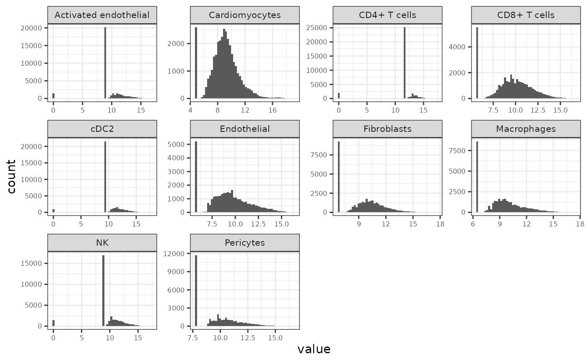
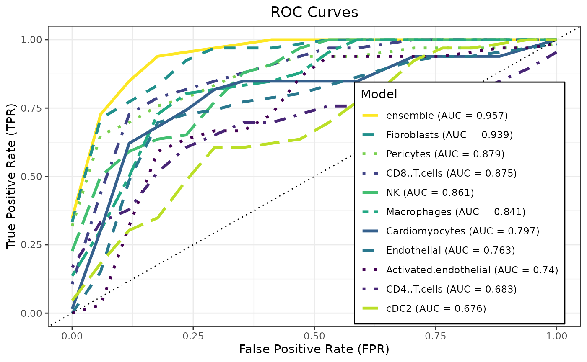
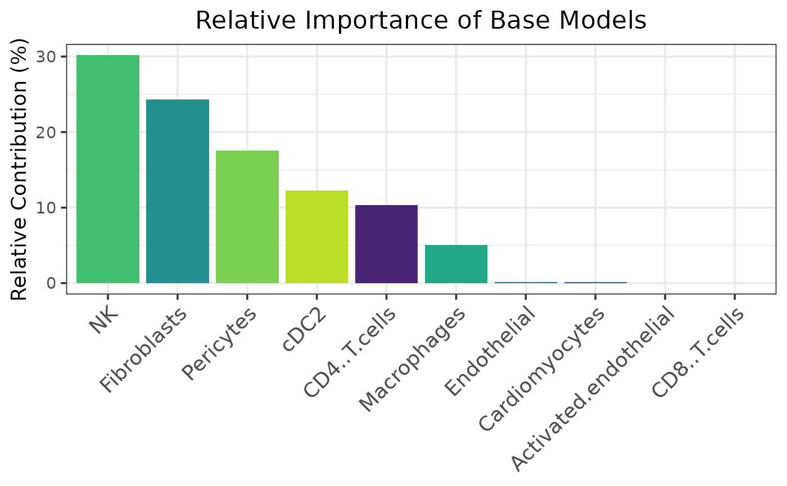
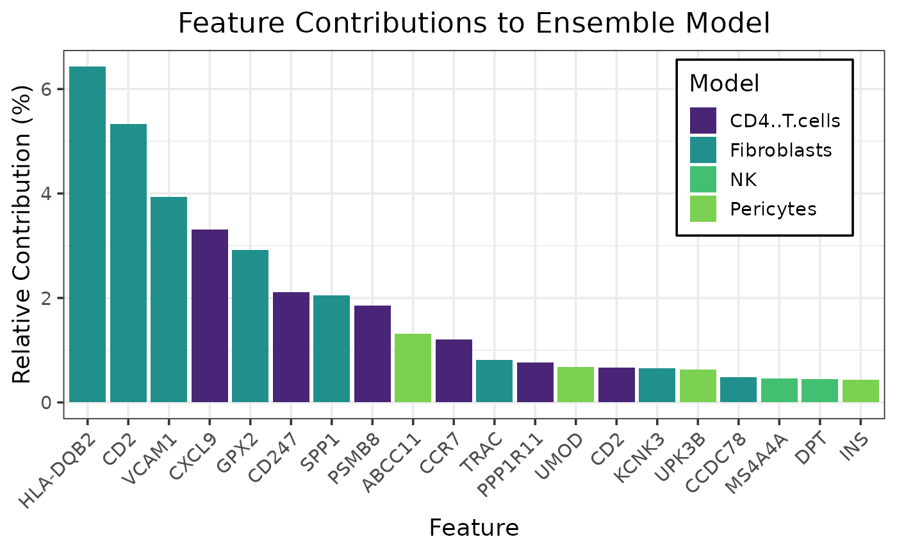

Spatial Transcriptomics Heart Transplant Rejection Modeling
Source:vignettes/single_cell_htr.Rmd
single_cell_htr.RmdThis vignette demonstrates a preprocessing workflow for deriving
multimodal sample-level views from spatial single-cell transcriptomics
data and using them with caretMultimodal.
Starting from Xenium heart transplant biopsy data from GEO (GSE290577), we aggregate single-cell expression into pseudobulk profiles stratified by cell type and sample, normalize each view independently, and assemble the result into a MultiAssayExperiment suitable for multimodal modeling. The resulting object can be used directly with caretMultimodal to train modality-specific learners and stacked ensembles. For simplicity, the modeling example shown here focuses on a binary classification task comparing ellular versus antibody mediated rejection.
Load and Preprocess the data
Collect the data from GEO
# Load the xenium data (takes a minute or two)
xenium_url <- "https://ftp.ncbi.nlm.nih.gov/geo/series/GSE290nnn/GSE290577/suppl/GSE290577_heart_spatial.rds"
xenium_raw <- curl::curl_fetch_memory(xenium_url)$content
xenium_obj <- unserialize(xenium_raw)
print(xenium_obj)## Loading required namespace: SeuratObject## An object of class Seurat
## 477 features across 162638 samples within 1 assay
## Active assay: RNA (477 features, 477 variable features)
## 3 layers present: counts, data, scale.data
## 3 dimensional reductions calculated: SP, pca, umap
## 1 spatial field of view present: fov
# Load the metadata
meta_url <- "https://ftp.ncbi.nlm.nih.gov/geo/series/GSE290nnn/GSE290577/suppl/GSE290577_heart_spatial_metadata.txt.gz"
meta_raw <- curl::curl_fetch_memory(meta_url)$content
meta_df <- read.delim(
text = rawToChar(memDecompress(meta_raw, type = "gzip")),
sep = "\t",
header = TRUE,
stringsAsFactors = FALSE
)
# Restrict to pre-biopsy, non-mixed rejection samples
meta_df <- meta_df |>
dplyr::filter(biopsy_timing == "pre") |>
dplyr::filter(biopsy_rejection_type != "mixed_rejection") |>
dplyr::arrange(patient_id)
head(meta_df)## patient_id Sample biopsy_timing age_at_biopsy
## 1 Patient_10 Patient_10_1 pre 42
## 2 Patient_11 Patient_11_1 pre 55
## 3 Patient_11 Patient_11_2 pre 55
## 4 Patient_12 Patient_12_1 pre 58
## 5 Patient_12 Patient_12_2 pre 58
## 6 Patient_13 Patient_13_1 pre 60
## treatment cav_grade death
## 1 oral_steroids 0 0
## 2 methylpred, thymoglobulin, PLEX, IVIG 1 1
## 3 methylpred, thymoglobulin, PLEX, IVIG 1 1
## 4 none 0 0
## 5 none 0 0
## 6 oral_steroids 0 0
## patient_cellular_grading patient_antibody_grading patient_rejection_type
## 1 2 pAMR1-h cellular_rejection
## 2 2 pAMR1-h cellular_rejection
## 3 2 pAMR1-h cellular_rejection
## 4 1 pAMR2 antibody_rejection
## 5 1 pAMR2 antibody_rejection
## 6 2 pAMR0 cellular_rejection
## biopsy_cellular_grading biopsy_antibody_grading biopsy_rejection_type sex
## 1 2 pAMR0 cellular_rejection M
## 2 1 pAMR1-h no_rejection M
## 3 2 pAMR1-h cellular_rejection M
## 4 0 pAMR1-i antibody_rejection M
## 5 1 pAMR2 antibody_rejection M
## 6 0 pAMR0 no_rejection M
## race donor_age donor_sex transplant_age transplant_day
## 1 B NA <NA> 41.96851 0
## 2 W 26 Male 54.55715 0
## 3 W 26 Male 54.55715 0
## 4 W 28 Male 56.29295 0
## 5 W 28 Male 56.29295 0
## 6 W 31 Female 60.60507 0
## days_from_transplant_to_biopsy days_from_transplant_to_cav
## 1 245 1861
## 2 175 267
## 3 175 267
## 4 1059 2129
## 5 1059 2129
## 6 53 355
## days_from_transplant_to_death resolution_broad
## 1 NA persistence
## 2 338 resolved
## 3 338 resolved
## 4 NA persistence
## 5 NA persistence
## 6 NA persistencePrepare cell-level metadata and count matrix
# Extract per-cell metadata and restrict to retained samples
cell_meta <- xenium_obj@meta.data |>
dplyr::filter(Sample %in% meta_df$Sample)
# Standardize fields required by muscat
cell_meta <- cell_meta |>
dplyr::mutate(
response = biopsy_rejection_type,
id = Sample,
group = patient_id,
sample_id = Sample,
cluster_id = ct_second_pass
)
# Extract raw counts (genes x cells), aligned to filtered metadata
rna_counts <- xenium_obj@assays$RNA@counts[, rownames(cell_meta), drop = FALSE]Construct SingleCellExperiment
sce_rna <- SingleCellExperiment::SingleCellExperiment(
assays = list(counts = rna_counts),
colData = S4Vectors::DataFrame(cell_meta)
)## Warning: replacing previous import 'S4Arrays::makeNindexFromArrayViewport' by
## 'DelayedArray::makeNindexFromArrayViewport' when loading 'SummarizedExperiment'
sce_rna## class: SingleCellExperiment
## dim: 477 68484
## metadata(0):
## assays(1): counts
## rownames(477): ABCC11 ABHD16A ... XCR1 ZCCHC12
## rowData names(0):
## colnames(68484): aaadcmfp-1_1 aaaghlda-1_1 ... oimehgjn-1_2
## oimeocni-1_2
## colData names(59): X orig.ident ... sample_id cluster_id
## reducedDimNames(0):
## mainExpName: NULL
## altExpNames(0):Pseudobulk by cell type and sample with Muscat
pb_rna <- muscat::aggregateData(
sce_rna,
assay = "counts",
fun = "sum",
by = c("cluster_id", "sample_id")
)
pb_rna## class: SingleCellExperiment
## dim: 477 71
## metadata(1): agg_pars
## assays(28): Activated endothelial Adipocytes ... Treg vSMCs
## rownames(477): ABCC11 ABHD16A ... XCR1 ZCCHC12
## rowData names(0):
## colnames(71): Patient_10_1 Patient_11_1 ... Patient_8_1 Patient_9_1
## colData names(31): orig.ident deprecated_codeword_counts ... id group
## reducedDimNames(0):
## mainExpName: NULL
## altExpNames(0):Normalize pseudobulk assays (TMM + logCPM)
for (assay_name in SummarizedExperiment::assayNames(pb_rna)) {
mat <- SummarizedExperiment::assay(pb_rna, assay_name)
lib_size <- colSums(mat)
keep_samples <- lib_size > 0
norm_mat <- matrix(
0,
nrow = nrow(mat),
ncol = ncol(mat),
dimnames = dimnames(mat)
)
if (sum(keep_samples) >= 2) {
dge <- edgeR::DGEList(counts = mat[, keep_samples, drop = FALSE])
dge <- edgeR::calcNormFactors(dge, method = "TMM")
norm_mat[, keep_samples] <- edgeR::cpm(
dge,
log = TRUE,
prior.count = 0.5
)
}
SummarizedExperiment::assay(pb_rna, paste0(assay_name, "_logCPM")) <- norm_mat
}## calcNormFactors has been renamed to normLibSizes
## calcNormFactors has been renamed to normLibSizes
## calcNormFactors has been renamed to normLibSizes
## calcNormFactors has been renamed to normLibSizes
## calcNormFactors has been renamed to normLibSizes
## calcNormFactors has been renamed to normLibSizes
## calcNormFactors has been renamed to normLibSizes
## calcNormFactors has been renamed to normLibSizes
## calcNormFactors has been renamed to normLibSizes
## calcNormFactors has been renamed to normLibSizes
## calcNormFactors has been renamed to normLibSizes
## calcNormFactors has been renamed to normLibSizes
## calcNormFactors has been renamed to normLibSizes
## calcNormFactors has been renamed to normLibSizes
## calcNormFactors has been renamed to normLibSizes
## calcNormFactors has been renamed to normLibSizes
## calcNormFactors has been renamed to normLibSizes
## calcNormFactors has been renamed to normLibSizes
## calcNormFactors has been renamed to normLibSizes
## calcNormFactors has been renamed to normLibSizes
## calcNormFactors has been renamed to normLibSizes
## calcNormFactors has been renamed to normLibSizes
## calcNormFactors has been renamed to normLibSizes
## calcNormFactors has been renamed to normLibSizes
## calcNormFactors has been renamed to normLibSizes
## calcNormFactors has been renamed to normLibSizes
## calcNormFactors has been renamed to normLibSizes
## calcNormFactors has been renamed to normLibSizes
pb_rna_norm <- pb_rna
pb_rna_norm## class: SingleCellExperiment
## dim: 477 71
## metadata(1): agg_pars
## assays(56): Activated endothelial Adipocytes ... Treg_logCPM
## vSMCs_logCPM
## rownames(477): ABCC11 ABHD16A ... XCR1 ZCCHC12
## rowData names(0):
## colnames(71): Patient_10_1 Patient_11_1 ... Patient_8_1 Patient_9_1
## colData names(31): orig.ident deprecated_codeword_counts ... id group
## reducedDimNames(0):
## mainExpName: NULL
## altExpNames(0):Convert to MultiAssayExperiment
# Identify normalized assays
log_assays <- grep("_logCPM$", SummarizedExperiment::assayNames(pb_rna_norm), value = TRUE)
# Sample-level metadata
sample_meta <- as.data.frame(SummarizedExperiment::colData(pb_rna_norm))
rownames(sample_meta) <- colnames(pb_rna_norm)
sample_meta <- S4Vectors::DataFrame(sample_meta)
# Build one SummarizedExperiment per cell type
se_list <- lapply(log_assays, function(assay_name) {
mat <- SummarizedExperiment::assay(pb_rna_norm, assay_name)
keep_genes <- matrixStats::rowVars(mat, na.rm = TRUE)
keep_genes <- is.finite(keep_genes) & keep_genes > 0
mat <- mat[keep_genes, , drop = FALSE]
SummarizedExperiment::SummarizedExperiment(
assays = list(logCPM = mat),
colData = sample_meta[colnames(mat), , drop = FALSE]
)
})
names(se_list) <- sub("_logCPM$", "", log_assays)
# Map assay columns to primary sample IDs
sample_map <- do.call(rbind, lapply(names(se_list), function(exp_name) {
sample_ids <- colnames(se_list[[exp_name]])
data.frame(
assay = exp_name,
primary = sample_ids,
colname = sample_ids,
stringsAsFactors = FALSE
)
}))
# Construct MAE
mae_pb <- MultiAssayExperiment::MultiAssayExperiment(
experiments = MultiAssayExperiment::ExperimentList(se_list),
colData = sample_meta,
sampleMap = sample_map
)## Warning: sampleMap[['assay']] coerced with as.factor()
mae_pb## A MultiAssayExperiment object of 28 listed
## experiments with user-defined names and respective classes.
## Containing an ExperimentList class object of length 28:
## [1] Activated endothelial: SummarizedExperiment with 477 rows and 71 columns
## [2] Adipocytes: SummarizedExperiment with 477 rows and 71 columns
## [3] B cells: SummarizedExperiment with 477 rows and 71 columns
## [4] BMX+ Activated endothelial: SummarizedExperiment with 477 rows and 71 columns
## [5] Cardiomyocytes: SummarizedExperiment with 477 rows and 71 columns
## [6] CD4+ T cells: SummarizedExperiment with 477 rows and 71 columns
## [7] CD8+ T cells: SummarizedExperiment with 477 rows and 71 columns
## [8] cDC1: SummarizedExperiment with 477 rows and 71 columns
## [9] cDC2: SummarizedExperiment with 477 rows and 71 columns
## [10] Endothelial: SummarizedExperiment with 477 rows and 71 columns
## [11] Fibroblasts: SummarizedExperiment with 477 rows and 71 columns
## [12] Lymphatic endothelial: SummarizedExperiment with 477 rows and 71 columns
## [13] Macrophages: SummarizedExperiment with 477 rows and 71 columns
## [14] Mast: SummarizedExperiment with 477 rows and 71 columns
## [15] mDC: SummarizedExperiment with 477 rows and 71 columns
## [16] Myofibroblasts: SummarizedExperiment with 477 rows and 71 columns
## [17] NK: SummarizedExperiment with 477 rows and 71 columns
## [18] pDC: SummarizedExperiment with 477 rows and 71 columns
## [19] Pericytes: SummarizedExperiment with 477 rows and 71 columns
## [20] Plasma: SummarizedExperiment with 477 rows and 71 columns
## [21] POSTN+ Fibroblasts: SummarizedExperiment with 477 rows and 71 columns
## [22] Proliferating DCs: SummarizedExperiment with 477 rows and 71 columns
## [23] Proliferating endothelial: SummarizedExperiment with 477 rows and 71 columns
## [24] Proliferating pericytes: SummarizedExperiment with 477 rows and 71 columns
## [25] Proliferating T cells: SummarizedExperiment with 477 rows and 71 columns
## [26] SPP1+ Macrophages: SummarizedExperiment with 477 rows and 71 columns
## [27] Treg: SummarizedExperiment with 477 rows and 71 columns
## [28] vSMCs: SummarizedExperiment with 477 rows and 71 columns
## Functionality:
## experiments() - obtain the ExperimentList instance
## colData() - the primary/phenotype DataFrame
## sampleMap() - the sample coordination DataFrame
## `$`, `[`, `[[` - extract colData columns, subset, or experiment
## *Format() - convert into a long or wide DataFrame
## assays() - convert ExperimentList to a SimpleList of matrices
## exportClass() - save data to flat filesSummarize and filter low-coverage experiments
# Extract sample-level response labels from the MAE
response_vec <- SummarizedExperiment::colData(mae_pb)$response
names(response_vec) <- rownames(SummarizedExperiment::colData(mae_pb))
response_levels <- sort(unique(as.character(response_vec)))
# Minimum number of nonzero samples required per response group
min_samples <- 15
# Count nonzero-library samples in each response group for every assay
experiment_summary <- lapply(names(MultiAssayExperiment::experiments(mae_pb)), function(exp_name) {
se <- MultiAssayExperiment::experiments(mae_pb)[[exp_name]]
lib_size <- colSums(SummarizedExperiment::assay(se, "logCPM"))
nonzero_samples <- names(lib_size)[lib_size > 0]
nonzero_tab <- table(factor(response_vec[nonzero_samples], levels = response_levels))
data.frame(
experiment = exp_name,
response = response_levels,
n_nonzero_lib = as.integer(nonzero_tab),
stringsAsFactors = FALSE
)
}) |>
dplyr::bind_rows()
# Retain assays with at least min_samples nonzero samples in every response group
keep_names <- experiment_summary |>
dplyr::group_by(experiment) |>
dplyr::summarise(keep = all(n_nonzero_lib >= min_samples), .groups = "drop") |>
dplyr::filter(keep) |>
dplyr::pull(experiment)
# Subset the MAE to retained assays
mae_pb_keep <- mae_pb[, , keep_names]## Warning: 'experiments' dropped; see 'drops()'## harmonizing input:
## removing 1278 sampleMap rows not in names(experiments)
mae_pb_keep## A MultiAssayExperiment object of 10 listed
## experiments with user-defined names and respective classes.
## Containing an ExperimentList class object of length 10:
## [1] Activated endothelial: SummarizedExperiment with 477 rows and 71 columns
## [2] CD4+ T cells: SummarizedExperiment with 477 rows and 71 columns
## [3] CD8+ T cells: SummarizedExperiment with 477 rows and 71 columns
## [4] Cardiomyocytes: SummarizedExperiment with 477 rows and 71 columns
## [5] Endothelial: SummarizedExperiment with 477 rows and 71 columns
## [6] Fibroblasts: SummarizedExperiment with 477 rows and 71 columns
## [7] Macrophages: SummarizedExperiment with 477 rows and 71 columns
## [8] NK: SummarizedExperiment with 477 rows and 71 columns
## [9] Pericytes: SummarizedExperiment with 477 rows and 71 columns
## [10] cDC2: SummarizedExperiment with 477 rows and 71 columns
## Functionality:
## experiments() - obtain the ExperimentList instance
## colData() - the primary/phenotype DataFrame
## sampleMap() - the sample coordination DataFrame
## `$`, `[`, `[[` - extract colData columns, subset, or experiment
## *Format() - convert into a long or wide DataFrame
## assays() - convert ExperimentList to a SimpleList of matrices
## exportClass() - save data to flat filesVisualize per-assay logCPM distributions
plot_df <- lapply(names(MultiAssayExperiment::experiments(mae_pb_keep)), function(exp_name) {
mat <- SummarizedExperiment::assay(
MultiAssayExperiment::experiments(mae_pb_keep)[[exp_name]],
"logCPM"
)
data.frame(
value = as.vector(mat),
experiment = exp_name
)
}) |>
dplyr::bind_rows()
ggplot2::ggplot(plot_df, ggplot2::aes(x = value)) +
ggplot2::geom_histogram(bins = 50) +
ggplot2::facet_wrap(~ experiment, scales = "free") +
ggplot2::theme_bw() +
ggplot2::theme(
strip.text = ggplot2::element_text(size = 8),
axis.text = ggplot2::element_text(size = 6)
)
Train models with caretMultimodal
There are several ways to model this data. For simplicity, this example uses a binary classification task comparing cellular versus antibody mediated rejection (ignoring subjects with no rejection).
set.seed(42L)
data_list <- caretMultimodal::prepare_mae(mae_pb_keep, transpose = TRUE)
# caretMultimodal currently expects syntactically safe view names
view_labels <- names(data_list)
view_names <- make.names(view_labels, unique = TRUE)
names(data_list) <- view_names
# Restrict to AMR vs CMR samples
responses <- factor(trimws(SummarizedExperiment::colData(mae_pb_keep)$response))
keep <- responses %in% c("antibody_rejection", "cellular_rejection")
data_list <- lapply(data_list, function(x) x[keep, , drop = FALSE])
response_subset <- droplevels(responses[keep])
# Elastic net hyperparameter grid
tuneGrid <- expand.grid(
alpha = seq(0, 1, by = 0.1),
lambda = 10^seq(-4, 1, length.out = 50)
)
# Repeated cross-validation
trControl <- caret::trainControl(
method = "repeatedcv",
number = 5,
repeats = 5,
savePredictions = "final",
classProbs = TRUE,
summaryFunction = caret::twoClassSummary
)
# Train base models
htr_models <- caretMultimodal::caret_list(
target = response_subset,
data_list = data_list,
method = "glmnet",
tuneGrid = tuneGrid,
trControl = trControl
)## Loading required package: ggplot2## Loading required package: lattice
# Train stacked ensemble
htr_stack <- caretMultimodal::caret_stack(
caret_list = htr_models,
method = "glmnet",
tuneGrid = tuneGrid,
trControl = trControl
)Evaluate Models
summary(htr_stack)## model method alpha lambda ROC Sens
## <char> <char> <num> <num> <num> <num>
## 1: Activated.endothelial glmnet 1.0 0.091029818 0.7518651 0.10000000
## 2: CD4..T.cells glmnet 0.1 0.471486636 0.6954762 0.02666667
## 3: CD8..T.cells glmnet 0.2 0.115139540 0.8928571 0.57000000
## 4: Cardiomyocytes glmnet 0.2 0.022229965 0.7935714 0.47666667
## 5: Endothelial glmnet 0.1 0.044984327 0.7536508 0.38000000
## 6: Fibroblasts glmnet 1.0 0.056898660 0.9411111 0.69666667
## 7: Macrophages glmnet 0.4 0.091029818 0.8729365 0.51000000
## 8: NK glmnet 0.1 0.022229965 0.8470635 0.24333333
## 9: Pericytes glmnet 0.1 0.056898660 0.8860317 0.56666667
## 10: cDC2 glmnet 0.1 0.115139540 0.7025397 0.24666667
## 11: ensemble glmnet 0.7 0.008685114 0.9786508 0.77333333
## Spec ROCSD SensSD SpecSD
## <num> <num> <num> <num>
## 1: 0.9647619 0.17297273 0.1666667 0.07626484
## 2: 0.9485714 0.20247181 0.1333333 0.12308242
## 3: 0.9285714 0.11595973 0.2147350 0.09597926
## 4: 0.8657143 0.14389650 0.1976716 0.17682746
## 5: 0.8857143 0.15262705 0.2558121 0.11884904
## 6: 0.9457143 0.08514564 0.2280655 0.08488354
## 7: 0.8923810 0.12570203 0.2693012 0.14171501
## 8: 0.9933333 0.13691066 0.2688711 0.03333333
## 9: 0.9247619 0.13006387 0.3071298 0.09365752
## 10: 0.9409524 0.16178537 0.2470661 0.11085287
## 11: 0.9323810 0.03880173 0.2435748 0.09187515
caretMultimodal::plot_roc(htr_stack)
caretMultimodal::plot_model_contributions(htr_stack)
caretMultimodal::plot_feature_contributions(htr_stack)